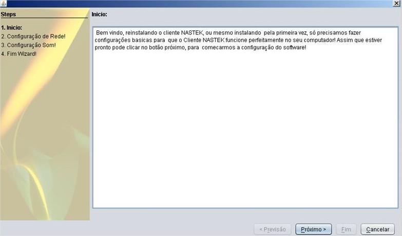
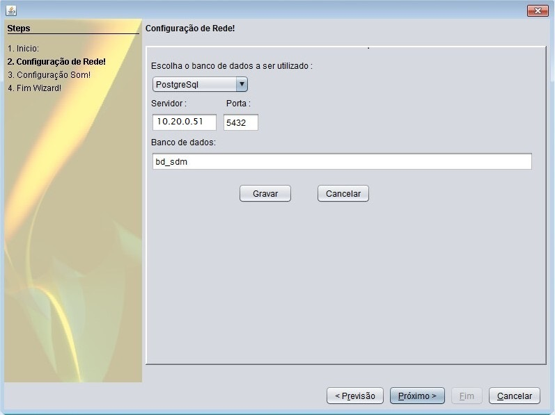
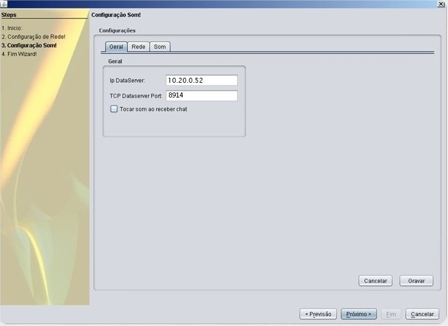
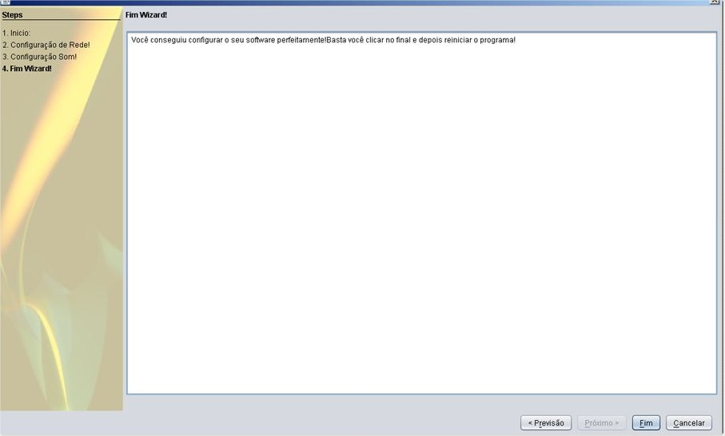

SDM Cliente
Instalação
Após o download da aplicação SDM Cliente, é necessário iniciar o processo de instalação.
Clique em Executar e aplicação comerá a instalação.
Ao termino da instalação, uma mensagem de assinatura digital aparecerá pela primeira vez.
Marque a opção EU ACEITO O RISCO E DESEJO EXECUTAR ESTA APLICAÇÃO e clique em Executar.
Após o término da instalação, será gerado um ícone com o nome de "CLIENTE SDM" em sua área de trabalho. Execute o programa o novo programa.Em sua primeira inicialização, aparecerá uma tela de boas-vindas, clique em PRÓXIMO.
Na tela abaixo será feita a conexão com o banco de dados. Selecione a opção POSTGRESSQL e em servidor adicione o IP: 10.20.0.51 PORTA: 5432 em nome do banco de dados coloque bd_sdm. Clique em SALVAR e depois PRÓXIMO.
Na tela abaixo, na guia geral, é configurada a conexão com o servidor de dados, Ip DataSever: 10.20.0.52, Porta: 8914. Clique em Gravar.
Na guia REDE, deve-se atentar-se para o uso ou não do proxy. Contate o responsável pela rede local, para saber se há,
ou não, a necessidade da configuração. No campo Servidor Tomcat, Endereço do mapa, coloque: http://10.20.0.52:8080/googleMapsV3.
Após inserir as configurações, clique em GRAVAR depois clique em PRÓXIMO. Caso não precise de Proxy, ignore a opção e deixe desabilitado
Clique em Fim para finalizar o processo de configuração do SDM Cliente.
Em alguns casos a mensagem abaixo irá aparecer novamente ao executar o programa.
Isso acontece, pois, o Java precisa adicionar uma permissão para que o programa possa ser iniciado. Conceda a Permissão.
Ao final, o aplicativo será instalado.
Clique em Abrir para abrir o aplicativo.
Desinstalação
Para a desinstalação, abra o Painel de Controle do Java e clique em Definições..

Desmarque o campo Manter os arquivos temporários no meu computador e clique em Excluir Arquivos....

Deixe todos os campos selecionados e clique em OK.

Clique em OK novamente.
Clique em OK e Aplicar.
Limpeza da Cache do Mapa
Inicialmente, feche o SDM Cliente, abra o menu Executar (Windows + r) e pesquise %temp%.

Procure e delete a pasta jxbrowser-chromium.

Reabra o SDM Cliente.